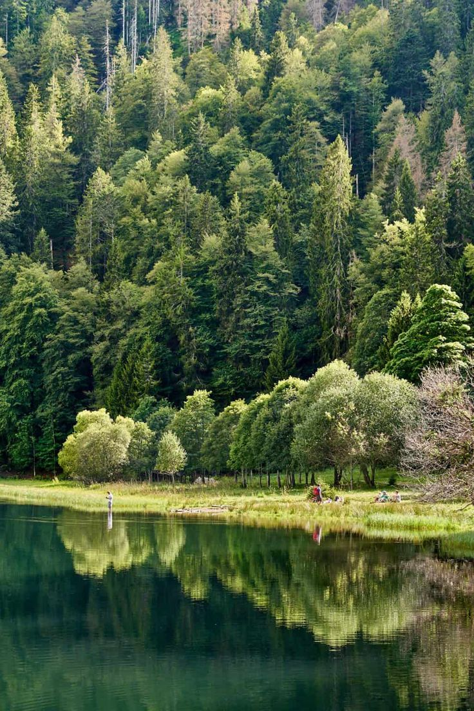
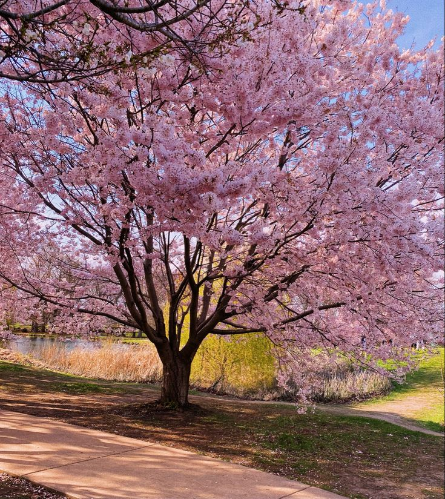

En stor äng med guldig himmel
som lysser ner på det gröna
grässet och dess blommor.
öppen äng med blå himmel och grön gräs
med stora berg långt bort.
äng med vete som sträcker sig över
långt bort med stora berg som kollar
över ängen.

Vid kanten av en sjö så finns det en
tjock och stor skog med höga träd
där en man fiskar vid kanten.
En skogs tunnel med gröna träd och en
grön äng vid slutet där tiden av dagen är
sen med ljuset från en sol nedgång.
En liten å som låter vatten
flytta ner i en stor skog med
höga granar och berg.
Höga snö berg med granar
där ljuset från solen lyser
ner på bergets top.
Ett foto tagen på fler skidliftar
åker upp ett snöigt berg
med träd rakt under.
snöig skogs väg där allt är täckt av
snö där vägen går långt hela vägen
till ett högt berg.
Ett körsbärsträd som har blommstrat
vid en sjö med ett stort
berg i backgrounden.
Flera körsbärsträd som har blommstart
när varandra i en grupp
över deras blommor så kan man
see ett stort berg.

En hel bild på ett körsbärsträd
som har blommstart med gräs och
andra växter i backgrounden.